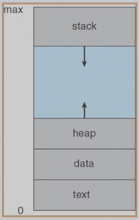
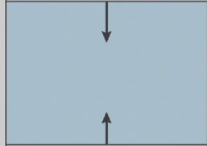
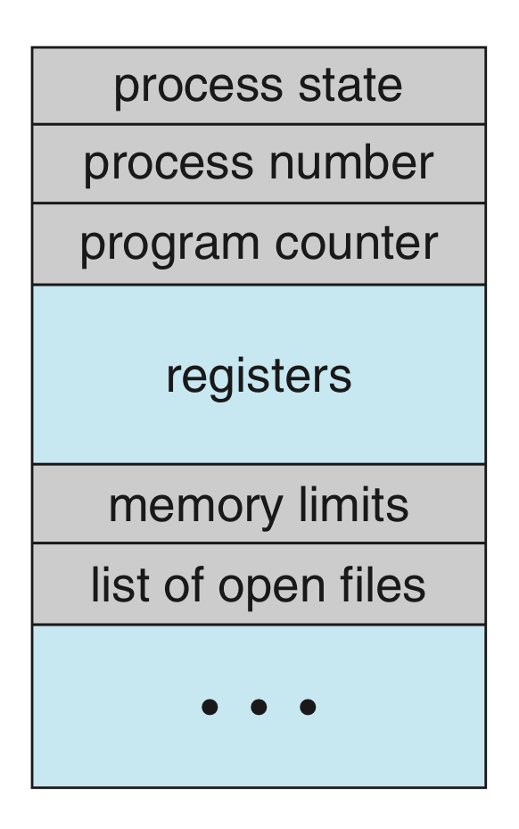
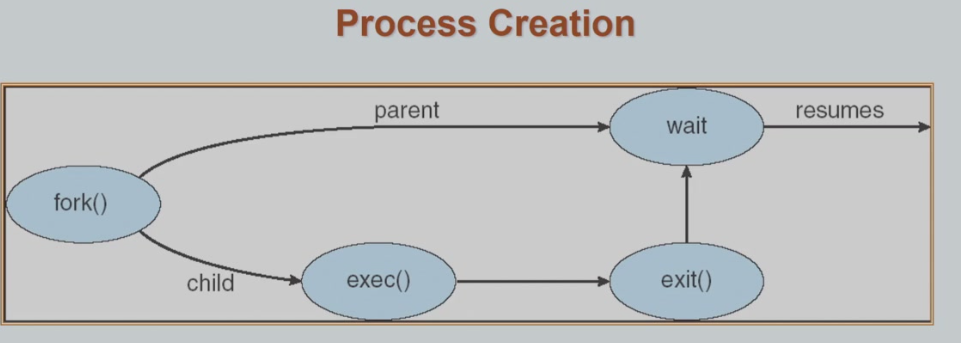
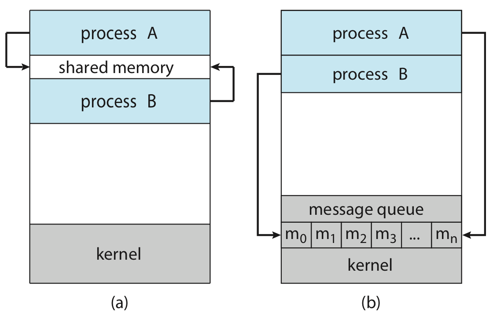
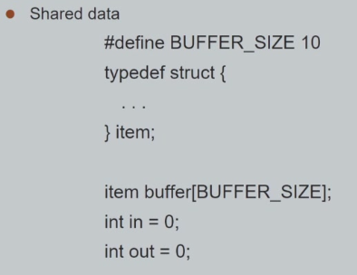
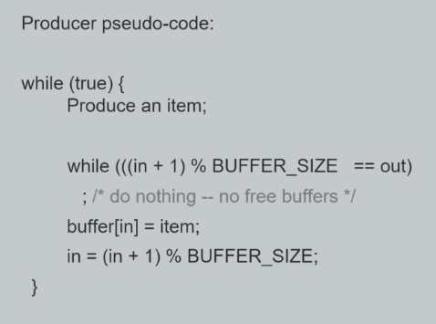
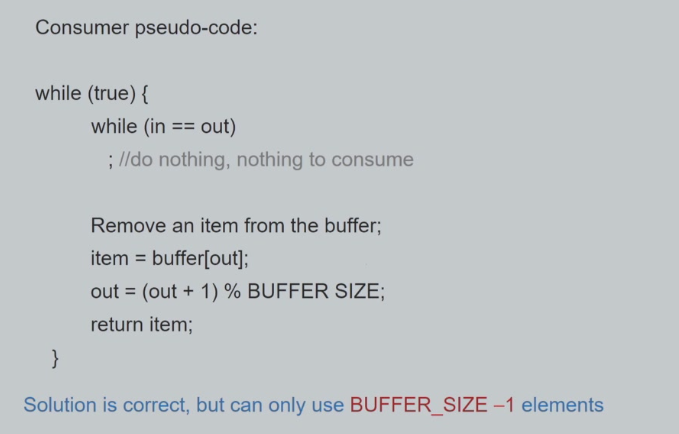
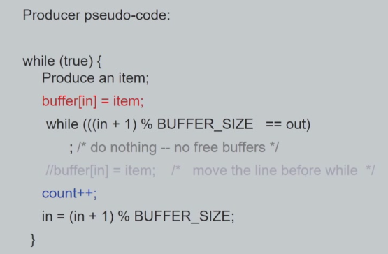
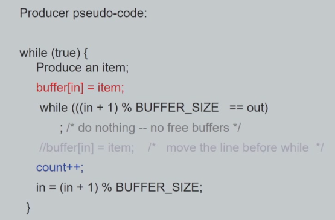

DECK: CS::OS
进程基本概念 flashcard
- 一段本质上是静态的、存储在硬盘上的指令数据，而当它附带运行程序所需要的必要信息进入内存，得到相关资源后，它成为一个动态的、与计算机资源互动的实体，这个实体就是进程(process)。简单来说就是运行中的一个实例。
- process=job。
进程的形式 flashcard
在内存中需要一块虚拟的地址空间来存储。包含两个部分
虚拟地址空间中的用户部分
- text section(code) 存储代码 加载到内存前以 executable file 的形式存储在 disk 中
- stack section 常说的栈 存储一些暂时性的数据，如函数传参、返回值、局部变量等
- data section 存储代码中的全局变量、静态变量
- heap section 常说的堆，被动态分配的内存
内存映像：0~max地址之间的区域叫做address space

- 进程访问的物理空间是虚地址，因此这里的max也叫做maxVA(最大的虚地址)
- 空洞hole：这个部分其实占比例很大，是无法合法访问的区域。
- text和data部分所需要的空间在一开始就被确定，heap和stack可以动态扩展和收缩（但是加上hole的整个空间不变）
虚拟地址空间中的内核部分
PCB
- program counter 标识该进程跑到了哪里（存储中断前的工作状态，指向下一个要运行的指令
- CPU registers 保存进程相关的寄存器信息
process control block（PCB） flashcard
操作系统用一个PCB表示进程，每个进程有且仅有一个PCB，PCB 是进程存在的唯一标志。其中包含许多当前进程的相关信息
- process state 进程的状态
- program counter 标识该进程跑到了哪里（存储中断前的工作状态，指向下一个要运行的指令
- CPU registers 保存进程相关的寄存器信息
- CPU-scheduling information CPU调度参考的信息，包括优先级、调度队列的指针、调度参数等。
- memory-management information 包括页表、段表等信息，具体与实现的内存系统有关。
- Accounting information 一些关于进程的动态数据的统计和记录，比如已经跑了多久、时间限制、进程号等等
- IO status information 被分配给进程的IO设备列表、打开的文件列表等
- 是每个进程所独有的数据，和别的进程无关。
- 是抽象概念的数据结构，不一定实现为block。不同的系统可能有不同的 PCB。Linux 中的进程用结构体
task_struct存储。 - 如果只是中断去处理什么而不涉及进程切换，PCB也可以不用工作，而重要的信息直接保存到kernel stack里面。

进程管理
进程树 (process tree)

- 用户进程在操作系统中，总体上遵循树状组织形式，每一个进程有一个唯一标识符进程号（通常为pid）
- 进程之间存在一种父子关系，即 child 进程是由 parent 进程创建的，用
ppid来标识它的 parent 进程
进程的创建 flashcard
- child 进程的资源可能直接来自操作系统的分配，也可能来自 parent 进程的继承，限制使用后者的好处是能够避免因为创建太多子进程而导致资源不够用。
- 进程树的根是
systemd，历史上也曾叫过init，它是操作系统启动后运行的第一个用户进程，至少在 Linux 中，它的pid被分配为 1，而它的ppid是 0，可以理解为这个进程的 parent 是 scheduler 而非一个进程
#include <stdio.h>
#include <unistd.h>
#include <sys/wait.h>
#include <sys/types.h>
int main() {
printf("A process starts!\n");
pid_t pid;
**pid = fork();**
if (pid < 0) {
printf("Fork failed!\n");
} else if (pid == 0) {
// sleep(1);
printf("pid is zero, so it's child process!\n");
} else {
**// wait(NULL);**
// sleep(1);
printf("pid is nonzero thus it's parent process!\n");
}
}
- UNIX 系统中可以使用系统调用
fork()来创建一个新进程。这个新进程是父进程的一份拷贝，它们只有 pid 和 ppid 不同，另外子进程当前内存使用记录为 0，除此以外全部相同。 pid = fork()之后，内存中有两个进程，一起从这行代码的下一行往下执行，通过检查返回值pid来判断属于parent还是child。在父进程中，fork（）返回的是创建的子进程的pid，子进程返回0，执行失败返回负数。- 这里的pid_t是一个局部变量
waite（NULL）即父进程可以继续运行，或者等待子进程运行完以后再运行- 使得当前进程进入 waiting 状态，并在任一子进程终止，或被信号停止，或被信号恢复时进入 ready 状态，同时返回发生该事件的子进程的 pid
- 如果第 18 行仍然被注释，那么 parent 进程和 child 进程将并发执行，即完成
fork()后两个进程都从 11 行开始继续向下并发的执行，互不阻塞- 操作系统会让它们交替使用CPU。谁先完成自己的
printf，完全取决于操作系统的“心情”（调度）。所以可能会先看到父进程的输出，也可能先看到子进程的输出。
- 操作系统会让它们交替使用CPU。谁先完成自己的
- 如果 18 行的注释被取消，那么 parent 进程将等待 child 进程结束后再继续。
- 父进程执行wait(NULL)这行时，会被阻塞，需要等到子进程完全结束（执行完所有代码或调用了exit）之后才能继续往下执行自己的内容，子进程输出一定在父进程之前
逻辑上创建的新进程有两种情况：
- 父进程执行wait(NULL)这行时，会被阻塞，需要等到子进程完全结束（执行完所有代码或调用了exit）之后才能继续往下执行自己的内容，子进程输出一定在父进程之前
- 复制 parent 进程的代码数据；
- 载入新的程序并继续执行；
而实际在 Linux 中，第一种通过fork()实现，第二种通过fork()后execXX()实现，execXX()会覆盖那个进程的地址空间，以实现执行其他程序
进程的终止 flashcard
- 当进程调用
exit()这个系统调用时，将被终止。 - C 语言 main 函数返回时也会隐式地调用
exit()。 - 进程也会由于一些信号、异常等终止。
这意味着这个进程将不再执行，其资源将被释放，同时返回状态值，而这个状态值将被 parent 进程的wait()接收。
父进程通过调用 wait() 来做两件事：
- 等待子进程结束。
- 接收（回收） 子进程的这个“状态码”（检查作业本）。
- 特别的，如果 parent 进程尚未调用
wait()，则这个 child 进程还不会完全消失，因为要返回的东西还没返回（child 并不知道 parent 会不会、什么时候来回收它）。这种逻辑上已经终止，但仍然占有一部分资源，等待 parent 进程调用wait()的进程，我们称之为僵尸进程(zombie)。 - 当子进程没有结束，或者终止了但父进程没有调用
wait()的情况下，父进程就结束了，子进程就会成为 孤儿进程 (orphan processes)（如果parent exiting ，成为孤儿进程，它的父进程变成init process（pid=1）init 进程会定期调用wait()）

进程间通信
-
如果一个进程受到其它进程的影响，或会影响其它进程，那么我们称之为协作进程(cooperation process)，比如一个进程的输出作为另一个进程的输入使用，之类的。
- 为了模块化设计，必不可少
-
进程间通信(inter-process communication, IPC) flashcard
- 是为了在进程的资源相互隔离的情况下，让不同的进程能相互访问资源从而协调工作。
- 两种方式
- 共享内存(shared memory)：（a）
- 相比下面几种效率更高，需要用到 system call 的地方只有建立共享内存的时候
- 两个进程各自有一块虚拟内存，映射到同一块物理内存。
- 也需要信号量等同步手段保护
- 消息传递(message passing)：（b）
- 在分布式系统中更容易实现，对于少量数据通信很有用（因为不需要处理冲突问题 ）；
- 建立link
- 直接通信 特定某个id的进程
- 间接通信 中转手段，比如信箱mailbox（well-known mailbox//ports）
- 同步 blocking
blocking send让sender blocked 直到信息被接收到blocking receivereceiver block直到信息可以被接收到
- 异步 non-blocking
- 建立link
- 在分布式系统中更容易实现，对于少量数据通信很有用（因为不需要处理冲突问题 ）；
- 共享内存(shared memory)：（a）
-
信号量(semaphores)：本意用来线程间同步，但是可以通过 sem_open() 系统调用来建立和维护进程间的信号量；这样的信号量属于 OS 资源，它会在相关进程结束后由 OS 释放
-
文件 / 管道(pipe)：
- 管道本质上也是一种文件，创建管道时操作系统会返回两端的文件描述符
- 但一个管道只支持单向传输，即只能 A 写 B 读，如果要实现双向需要两个管道【逻辑上是一个半双工的信道】
【模型】producer-consumer problem
producer 信息输出方
consumer 信息接收方
- 无界缓冲区 unbounded-buffer 缓冲区的大小相比于发送的信息相比不会满
- 有界缓冲区 bounded-buffer
- producer往buffer中放入items，consumer取出
- 指定指针index-in给producer使用，index-out提供给consumer
- 
- 检查如果==out：认为没有freeitem是可以放的【下一个位置就是out指针】
- 否则放入并且后移一位：0~buffersize-1，下一个又从0开始【理解为环形队列】
- 
- 如果有可取用的item 就往后移一位，并取出使用
问题是：会浪费一个element 当out=1 in=0的时候 in没有办法insert进去了
： 

- 如果有可取用的item 就往后移一位，并取出使用